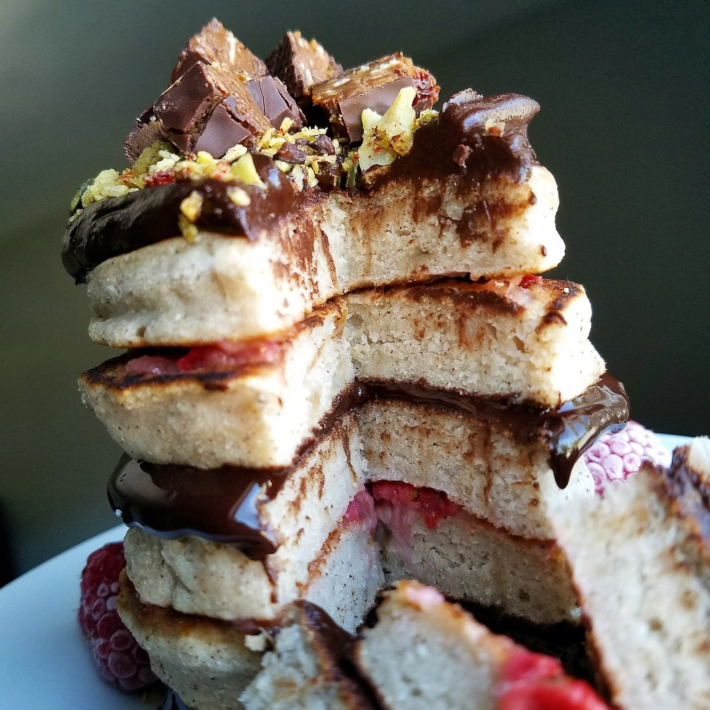
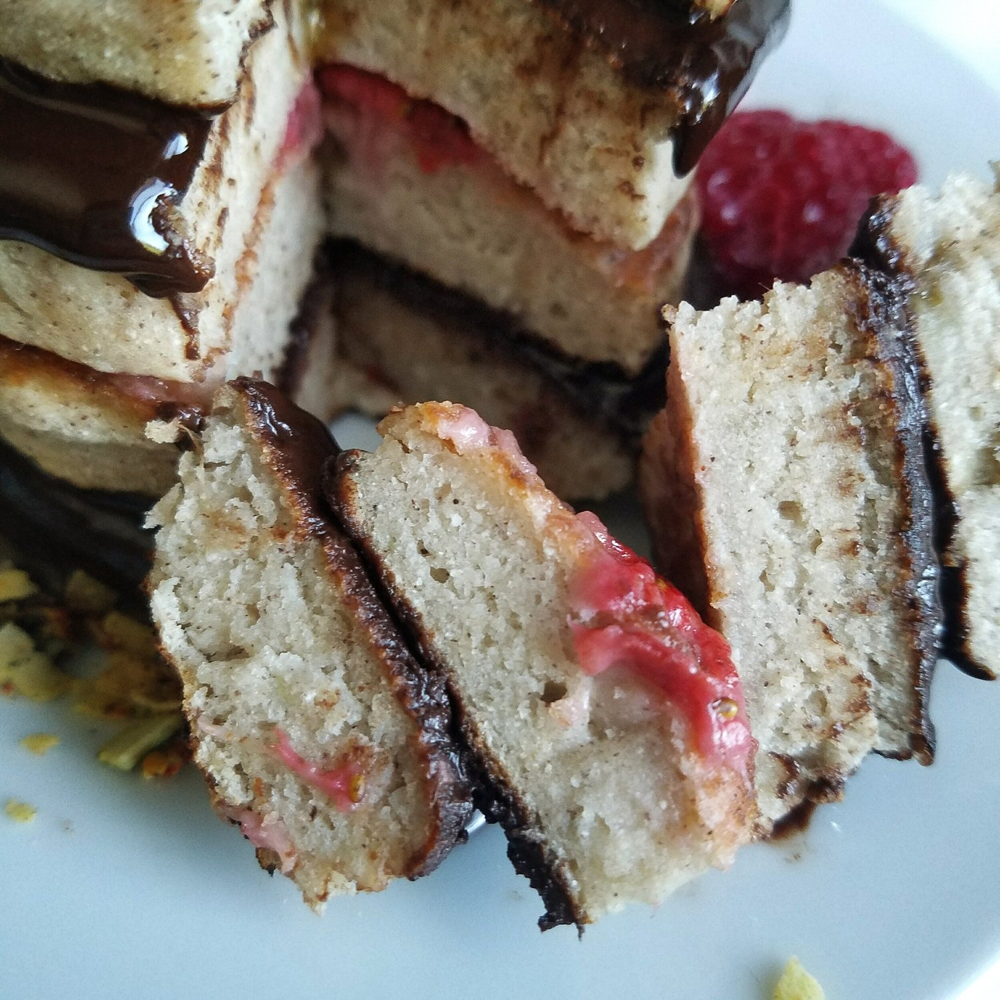
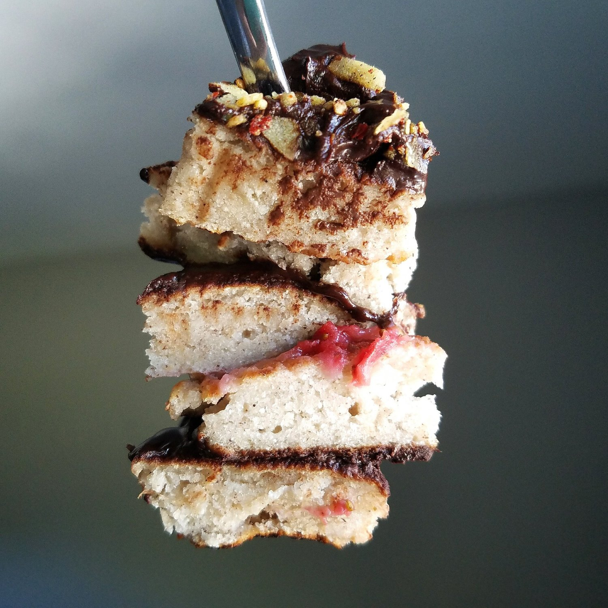

Fluffy Banana Bread Pancakes (vegan, gluten free)



On this episode of my little pony: pancakes are magic - fluffyyyy banana bread pancakes. These sweet, delicate pancakes are completely vegan, gluten free, and sugar free too! Sweetened naturally by banana, these pancakes are sure to comfort your sweet cravings.
I baked some banana bread the other day, and...per usual...I ate the whole thing in less than 48 hours. I don't know how I finish banana bread so fast?! It literally disappears. All my other baked goods linger for days, and I honestly have to give away a lot of stuff. But banana bread? Nope, mine, gimme. I had some separation anxiety with my banana bread, so I decided to fix the problem with some quick banana bread pancakes.
These pancakes are everything I love about banana bread. Sweet...thick...with a bit of comforting spices. The only aspect it's lacking is the "coldness" - I just really love cold banana bread okay?! Is that weird??I layered these banana bread pancakes with mashed berries and a chocolate fudge. I made the chocolate simply by mixing unsweetened cocoa powder with nunaturals cocoa stevia syrup, which I get on iherb.com. Then....(just wait, there's more) I topped this lovely stack with sprinkles of blend co and the new coconut cherry square bar!
Square bar reformulated the cocoa cherry bar, and they also added a new mixed nuts sea salt flavor! I LOVE this new coconut cherry bar. Well, I love both of the new bars. But comparing this new cherry bar to the old one, this one trumps. I feel like the cherry flavor is more pronounced, plus the addition of amazing coconut!! You know I love coconut. Lastly, the overall texture is just so creamy and fantastic. I'm a fan.
Anyways, try out these banana bread pancakes! They are vegan, gluten free, and sugar free! Can't deny with this delicious healthy breakfast option!
Fluffy Banana Bread Pancakes
Serves: 1
-
1/2 mashed banana
-
1/4 cup buckwheat flour
-
1 TBSP coconut flour
-
1 stevia packet
-
1/2 tsp baking powder
-
1/4 tsp cinnamon
-
1/4-1/3 cup unsweetened almond milk
First, mash your banana in a bowl. Then add all of the dry ingredients and mix evenly! Lastly, you will stir in the almond milk while mixing. Start with just 1/4 cup almond milk. If the batter is still too thick, add 1-2 TBSP more almond milk to get the right consistency. Mix mix mix until smooth.
Heat a large pan to a medium heat, and spray with nonstick spray. Cook your batter into 5 pancakes! They will cook for 3-4 minutes on one side until lightly browned and risen, flip, and cook another 1-2 minutes on the other side!